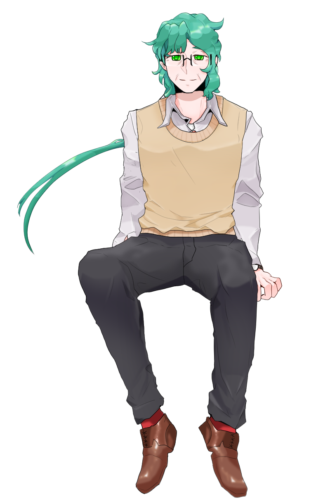

- 
-
이름구르트성격- 나긋나긋하고 친절한 성격. 웃는 상으로 지내는 만큼 인심이 좋다 - 계획적이고 부지런하게 움직이지만 융통성이 있어 느슨하게 행동하는 편 - 표현하고 말하는 것에 성숙한 사람. 자신이 가진 모든 것에 감사하며 아끼고 있다특징- 50대 후반의 나이. 키는 170 남짓 표준체중 - 야구르트를 정말 좋아한다. 여전히 남양은 거른다 - L.I.F로 인해 만들어진 가상세게에서의 신이라고 소개한다. 그럼에도 자신이 만든 피조물에 가장 가까운 존재가 되고 싶어한다 - 구조대에서 은퇴하고 바다 앞에 지은 집에서 가족과 함께 시간을 보내고 있다 - 옷을 입을 때 항상 어딘가에는 붉은색이 있도록 한다 - 부족했던 애정을 받으며 잊어버렸던 것들은 다시 되찾고, 부서진 것들은 새로운 것으로 대처하며 스스로 발전하기 위해 노력해왔다. 지금과 앞으로의 일에 최선을 다할려고 한다 - 그의 이름은 구르트이다 - 건장한 체격에 힘이 제법 세다. 구조대 활동의 은퇴막바지에는 제법 잘뛰는 편에 속했다 - 복이라는 아내가 있다 - 원, 유리아 라는 쌍둥이 자녀가 있다 - 가장 좋아하는 꽃은 복수초
ⓒ 2020 Site - Com / Illustration - Com